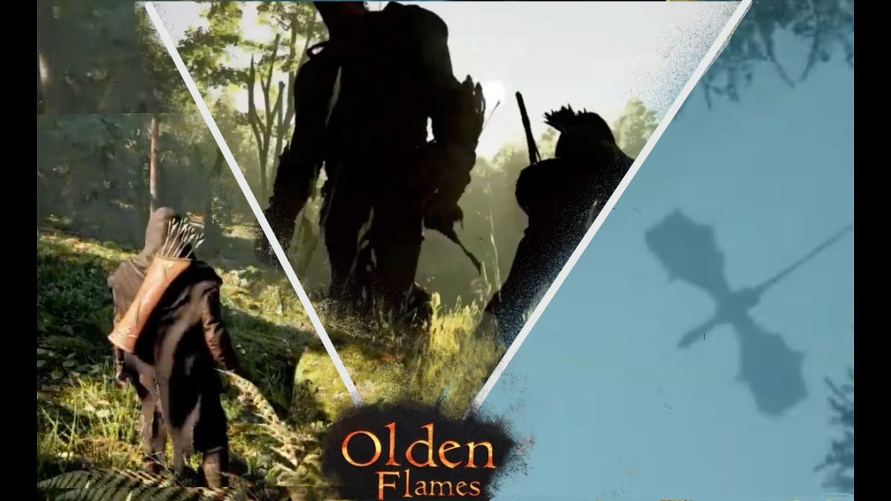

Trailer: “He Hunts Giants… Until the Dragon Appears”. Loads from YouTube when you press play.
Game · MiraiX
Olden Flames
I design the interface and the visual effects for Olden Flames at MiraiX: the HUD and menus you see on screen, and the fire, magic and impact effects you see in the world. The trailer above shows both in action.